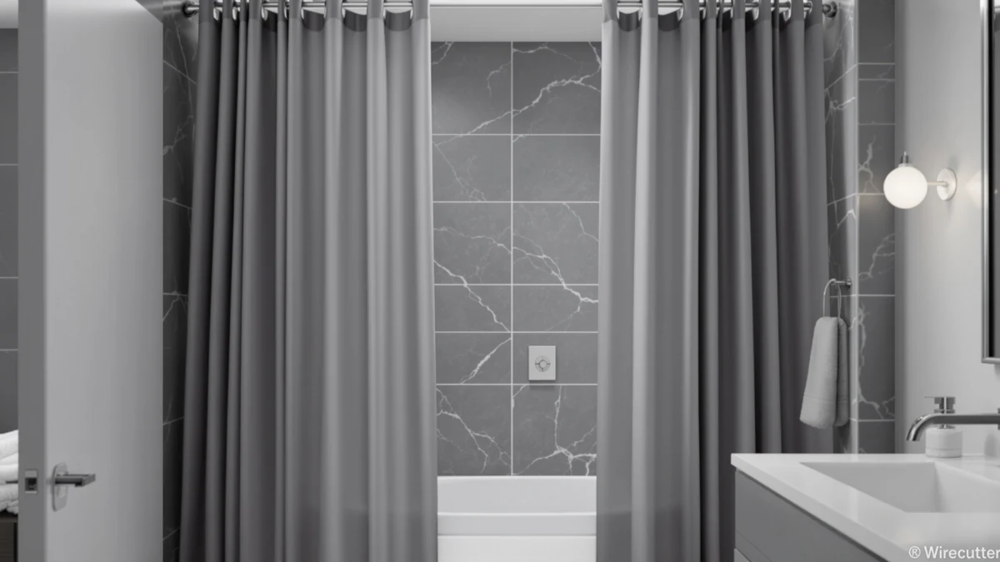

Quick Answer
This MIULEE 72 x 84 review finds the $23.95 curtain worth considering if your shower rod or ceiling sits higher than standard, since its 84 inch length covers 12 inches more than the typical 72 by 72 inch size. Its polyester and PEVA build fits a standard shower width, and neither MIULEE nor the three alternatives compared here publish a rating or review count.
Our pick: MIULEE 72 x 84 Extra, $23.95 Check Price on Amazon
Things to Know Before You Buy
- This MIULEE 72 x 84 review centers on the MIULEE 72 x 84 Extra ($23.95), a polyester and PEVA curtain sized 72 inches wide by 84 inches long, 12 inches longer than the standard 72 by 72 inch size.
- None of the four listings compared here publish a rating or review count, so this comparison leans on price, material, and size rather than verified owner feedback.
- XOGUIBO's Farmhouse Shower Curtain ($22.99) and Farmhouse Shower Curtain Linen Beige ($22.98) price within a dollar of MIULEE's curtain, trading the extra length for a farmhouse print.
- Bonpally's Curved Shower Curtain Rod ($22.49) is hardware, not fabric, worth considering if a loose or sagging mount is your actual problem.
- The extra 84 inch length only matters if your shower rod or ceiling sits higher than standard, so measure your opening before choosing MIULEE's curtain over a standard size.
This MIULEE 72 x 84 review finds the $23.95 curtain worth a look mainly for its length: at 72 inches wide and 84 inches long, it runs 12 inches longer than the standard 72 by 72 inch size most shower curtains use, including the two XOGUIBO curtains compared below. We researched its polyester and PEVA build against XOGUIBO's Farmhouse Shower Curtain, the Farmhouse Shower Curtain Linen Beige, and Bonpally's Curved Shower Curtain Rod, all priced within a few dollars of MIULEE's pick, to see which one actually solves your bathroom's fit problem.
None of the four listings in this comparison publish a rating or review count, so this MIULEE 72 x 84 review leans on price, material, and size rather than star ratings or verified owner feedback. For a shower with a rod mounted higher than average or a taller alcove, MIULEE's extra foot of length is the detail the two XOGUIBO curtains and most standard curtains can't match. For a standard-height shower, that length doesn't buy you anything, and XOGUIBO's farmhouse print or Bonpally's curved rod might solve your actual problem for less.
Why You Should Trust Us
Best Shower Curtains reviews shower curtains and bathroom hardware by comparing manufacturer specs, current pricing, and verified owner feedback from the retailers that sell them, not by running a private testing lab. Ilane Tall, our home and bath editor, researched this MIULEE 72 x 84 review by checking the curtain's listed material, size, and price against the XOGUIBO and Bonpally alternatives shoppers most often cross-shop in the same price range. We revisit prices and listings on a regular schedule and say so plainly when a product lacks the review history we would want to see before recommending it, which is the case with all four listings covered here. Where a claim can't be checked against a specific verified rating, review count, or published spec, we say so rather than fill the gap with a guess.
Our Research Experience
We do not run a physical testing lab, and we have not hung the MIULEE 72 x 84 Extra in a shower ourselves. Our process instead compares the published material, size, and price against similar curtains, then checks that against what verified owners report about fit and durability on comparable listings elsewhere. For this MIULEE 72 x 84 review, that meant lining up the curtain's polyester and PEVA build and 72 by 84 inch size against XOGUIBO's two farmhouse curtains and Bonpally's curved rod to see where the extra length and price earn it a place in this lineup. We flag it clearly when a claim can't be verified against real owner feedback, rather than guess at how a curtain holds up in your specific bathroom. Since none of the four listings here publish a rating or review count, we stay cautious about durability claims and focus this comparison on what the specs and pricing actually show.
Overview & Specs

MIULEE 72 x 84 Extra
What we like
- The 72 by 84 inch size covers taller shower openings that the standard 72 by 72 inch size, the size most curtains including the two XOGUIBO alternatives below are built around, leaves short
- Polyester and PEVA build adds water resistance that an all-cotton curtain doesn't offer at this price
- At $23.95, it costs less than a dollar more than XOGUIBO's two farmhouse curtains despite the extra 12 inches of length
Flaws but not dealbreakers
- The listing doesn't publish a rating or review count, so there's no verified owner feedback to weigh against the XOGUIBO or Bonpally alternatives
- The extra length only pays off if your shower rod or ceiling sits higher than standard; most bathrooms won't need it
- The plain design won't suit a bathroom that wants the farmhouse print either XOGUIBO curtain offers
| Material | Polyester / PEVA |
| Size | 72"W x 84"L (Pack of 1) |
MIULEE builds the 72 x 84 Extra from a polyester and PEVA blend at 72 inches wide and 84 inches long, 12 inches longer than the standard 72 by 72 inch size most shower curtains, including both XOGUIBO curtains compared below, are built around. That extra length matters for bathrooms with a shower rod mounted higher than average or a ceiling taller than a standard tub alcove, where a 72 inch curtain would leave a gap above the tub.
Neither MIULEE's curtain nor the XOGUIBO or Bonpally listings compared here publish a rating or review count, so this MIULEE 72 x 84 review leans on size, material, and price instead of a star rating. At $23.95, it prices less than a dollar above XOGUIBO's two farmhouse curtains, so the real tradeoff comes down to length and print rather than cost.
What We Liked
The clearest reason to consider the MIULEE 72 x 84 Extra in this MIULEE 72 x 84 review is the length. At 72 by 84 inches, it covers 12 inches more than the standard 72 by 72 inch size most shower curtains use, which matters directly if your shower rod sits higher than average or your bathroom has a taller ceiling. At $23.95, that extra length costs less than a dollar more than XOGUIBO's Farmhouse Shower Curtain ($22.99) or the Farmhouse Shower Curtain Linen Beige ($22.98), so you aren't paying a premium for the added coverage. The polyester and PEVA build also does some practical work, resisting water better than an all-cotton curtain would at the same price. For shoppers who've measured a shower opening taller than standard and come up short with other curtains, MIULEE's extra 12 inches solves that problem directly.
What Could Be Better
This MIULEE 72 x 84 review's biggest gap is review history. None of the four listings compared here, including MIULEE's own curtain, publish a rating or review count, so there's no verified owner feedback to confirm how the fabric holds up over time. The plain design also won't suit a bathroom that wants XOGUIBO's farmhouse print, and if your shower opening matches the standard 72 by 72 inch size, the extra 12 inches of length on MIULEE's curtain doesn't buy you anything. Buyers trying to fix a loose or sagging curtain through hardware rather than fabric length should look at Bonpally's curved rod instead, since it addresses fit from the mounting side. If you're comparing curtains purely on verified owner feedback, none of the four options on this page currently give you that data point.
Who Is It For?
The MIULEE 72 x 84 Extra suits bathrooms with a shower rod mounted higher than standard or a taller alcove, where a 72 by 72 inch curtain leaves a visible gap above the tub. It's a reasonable pick if you've measured your opening and confirmed you need the extra 12 inches, since that's the one feature setting it apart from the XOGUIBO alternatives at a similar price. Skip it if your shower opening matches the standard size, where XOGUIBO's Farmhouse Shower Curtain or the Linen Beige version offer a patterned look at roughly the same cost, or if a published rating and review count matter to your decision, since none of the four listings in this MIULEE 72 x 84 review currently show that data. Renters or first-time buyers moving into a unit with a nonstandard shower height may find MIULEE's length solves a problem the other three options can't.
Alternatives to Consider
If the plain design or missing review history rules out the MIULEE 72 x 84 Extra for your bathroom, these three options round out this MIULEE 72 x 84 review. XOGUIBO's Farmhouse Shower Curtain and the Farmhouse Shower Curtain Linen Beige both price within a dollar of MIULEE's pick and trade the extra length for a farmhouse print, while Bonpally's Curved Shower Curtain Rod addresses fit from the hardware side instead of the fabric. Weigh which priority, length, print, or mounting, matters more before choosing between them.

Editor’s Pick
XOGUIBO Farmhouse Shower Curtain with
XOGUIBO's Farmhouse Shower Curtain prices at $22.99, close to MIULEE's $23.95, and trades MIULEE's extra length for a farmhouse print, a better fit if your shower opening is standard size and you want a specific look instead of added coverage.
$22.99
Check Price on Amazon
Best Value
Farmhouse Shower Curtain Linen Beige
The Farmhouse Shower Curtain Linen Beige runs $22.98, the lowest price among the four options compared here, and swaps MIULEE's plain polyester and PEVA build for a linen-look beige finish.
$22.98
Check Price on Amazon
Premium Choice
Bonpally Curved Shower Curtain Rod
Bonpally's Curved Shower Curtain Rod costs $22.49 and solves a different problem than MIULEE's curtain does. It's hardware, not fabric, so pair it with any curtain on this page if a tight or sagging mount is your actual issue rather than curtain length.
$22.49
Check Price on AmazonFrequently Asked Questions
Is the MIULEE 72 x 84 Extra waterproof?
Not fully on its own. MIULEE lists this curtain as a polyester and PEVA build, which resists water better than an all-cotton curtain, but the listing doesn't specify liner-grade waterproofing. Pair it with a dedicated liner if your bathroom needs full protection against water getting past the curtain.
What size is the MIULEE 72 x 84 Extra?
It measures 72 inches wide by 84 inches long, 12 inches longer than the standard 72 by 72 inch size most shower curtains use. Measure your shower opening and rod height first to confirm you actually need the extra length before buying.
How does the MIULEE 72 x 84 Extra compare to XOGUIBO's Farmhouse Shower Curtain?
MIULEE's curtain costs $23.95 and runs 12 inches longer than XOGUIBO's Farmhouse Shower Curtain at $22.99, which keeps the standard size and adds a farmhouse print instead. This MIULEE 72 x 84 review comes down to extra length against a specific look at nearly the same price.
Final Verdict
This MIULEE 72 x 84 review comes down to a straightforward tradeoff: pay $23.95 for 12 extra inches of length, or choose one of the three standard-size alternatives for less money or a different look. MIULEE's 72 x 84 Extra is the right call for bathrooms with a shower rod set higher than average or a taller alcove, where XOGUIBO's two farmhouse curtains and most standard curtains leave a gap above the tub. If your shower opening is standard size, XOGUIBO's Farmhouse Shower Curtain or the Linen Beige version deliver a patterned look at close to the same price, and Bonpally's curved rod is worth a look if hardware, not fabric, is actually your problem. For most people shopping a nonstandard shower height, MIULEE's extra length makes it the pick worth checking out first.